In [46]: runfile('C:/Users/Sarah/eclipse-workspace/GPLAG/src/compareGraphs.py', wdir='C:/Users/Sarah/eclipse-workspace/GPLAG/src')
C:\ProgramData\Anaconda3\lib\site-packages\networkx\drawing\nx_pylab.py:579: MatplotlibDeprecationWarning:
The iterable function was deprecated in Matplotlib 3.1 and will be removed in 3.3. Use np.iterable instead.
if not cb.iterable(width):
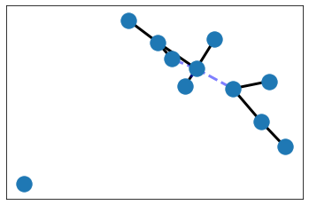
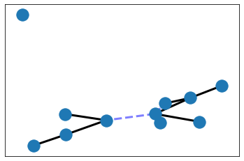
The two graphs from code1 and code1cp are isomorphic.
The structures of code1 and code1cp seem to be identical. Please investigate further.
A subgraph of code1cp with a gamma of 0.9 is subgraph isomorphic to code1.
code1 and code1cp seem to violate the threshold for similarity. Please investigate further.
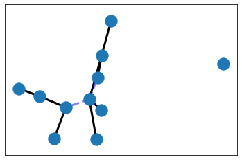
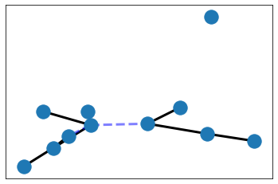
The two graphs from code1 and code2 are not isomorphic.
The structures of code1 and code2 do not seem to be identical.
A subgraph of code2 with a gamma of 0.9 is subgraph isomorphic to code1.
code1 and code2 seem to violate the threshold for similarity. Please investigate further.
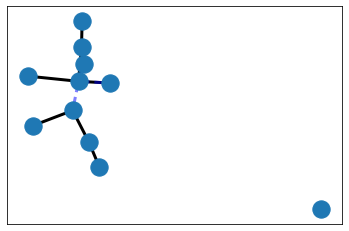
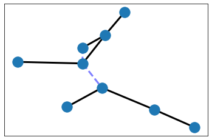
The two graphs from code1 and code3 are not isomorphic.
The structures of code1 and code3 do not seem to be identical.
A subgraph of code3 with a gamma of 0.9 is subgraph isomorphic to code1.
code1 and code3 seem to violate the threshold for similarity. Please investigate further.
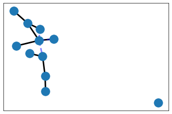
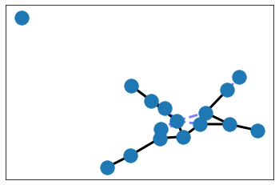
The two graphs from code1 and code4 are not isomorphic.
The structures of code1 and code4 do not seem to be identical.
There is no subgraph of code4 with a gamma of 0.9 that is subgraph isomorphic to code1.
code1 and code4 seem not to violate the threshold for similarity.
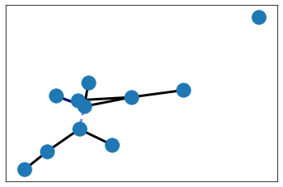
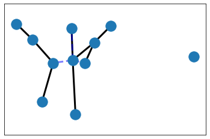
The two graphs from code1cp and code2 are not isomorphic.
The structures of code1cp and code2 do not seem to be identical.
A subgraph of code2 with a gamma of 0.9 is subgraph isomorphic to code1cp.
code1cp and code2 seem to violate the threshold for similarity. Please investigate further.
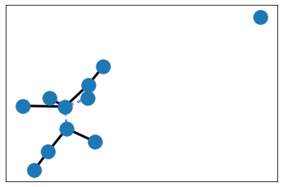
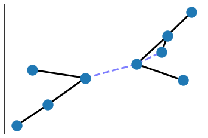
The two graphs from code1cp and code3 are not isomorphic.
The structures of code1cp and code3 do not seem to be identical.
A subgraph of code3 with a gamma of 0.9 is subgraph isomorphic to code1cp.
code1cp and code3 seem to violate the threshold for similarity. Please investigate further.
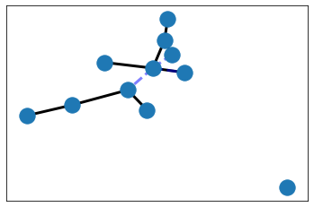
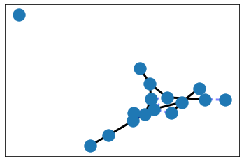
The two graphs from code1cp and code4 are not isomorphic.
The structures of code1cp and code4 do not seem to be identical.
There is no subgraph of code4 with a gamma of 0.9 that is subgraph isomorphic to code1cp.
code1cp and code4 seem not to violate the threshold for similarity.
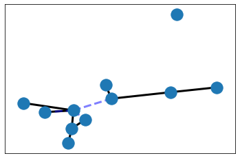
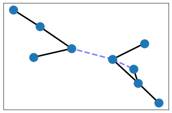
The two graphs from code2 and code3 are not isomorphic.
The structures of code2 and code3 do not seem to be identical.
There is no subgraph of code3 with a gamma of 0.9 that is subgraph isomorphic to code2.
code2 and code3 seem not to violate the threshold for similarity.
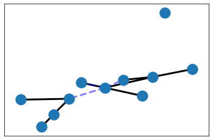
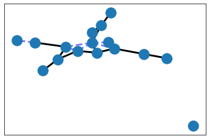
The two graphs from code2 and code4 are not isomorphic.
The structures of code2 and code4 do not seem to be identical.
There is no subgraph of code4 with a gamma of 0.9 that is subgraph isomorphic to code2.
code2 and code4 seem not to violate the threshold for similarity.
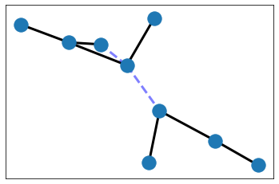
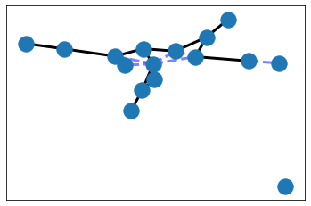
The two graphs from code3 and code4 are not isomorphic.
The structures of code3 and code4 do not seem to be identical.
There is no subgraph of code4 with a gamma of 0.9 that is subgraph isomorphic to code3.
code3 and code4 seem not to violate the threshold for similarity.
The ratio of gamma isomorphic code is: 0.5
In [47]: